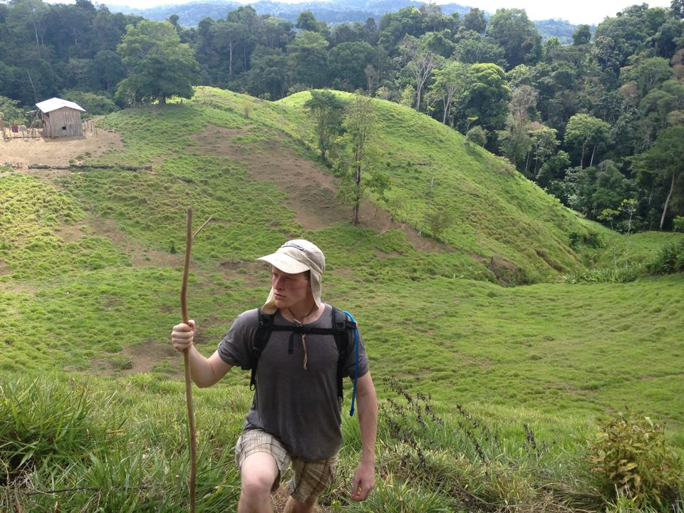
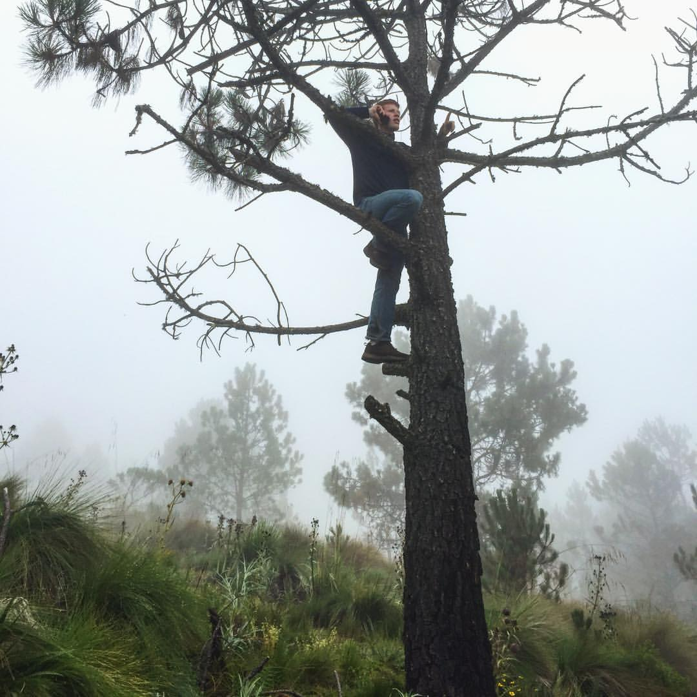
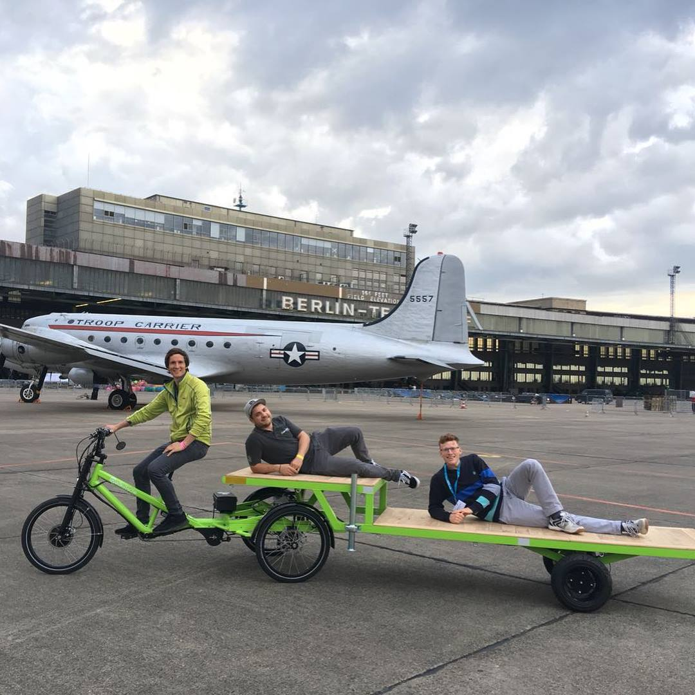
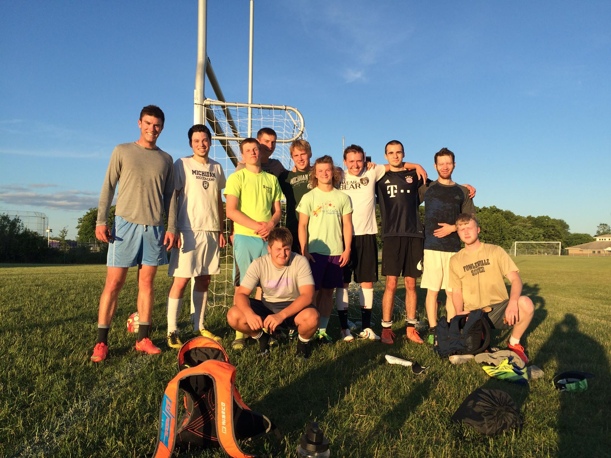
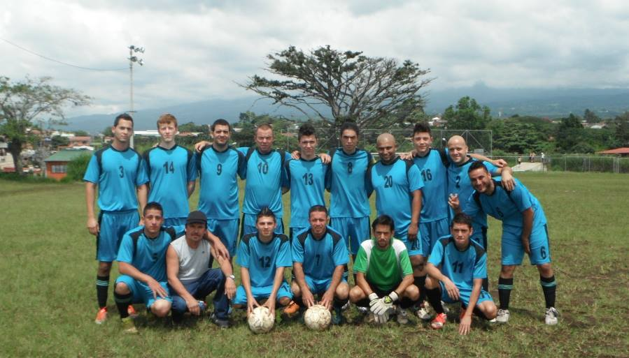
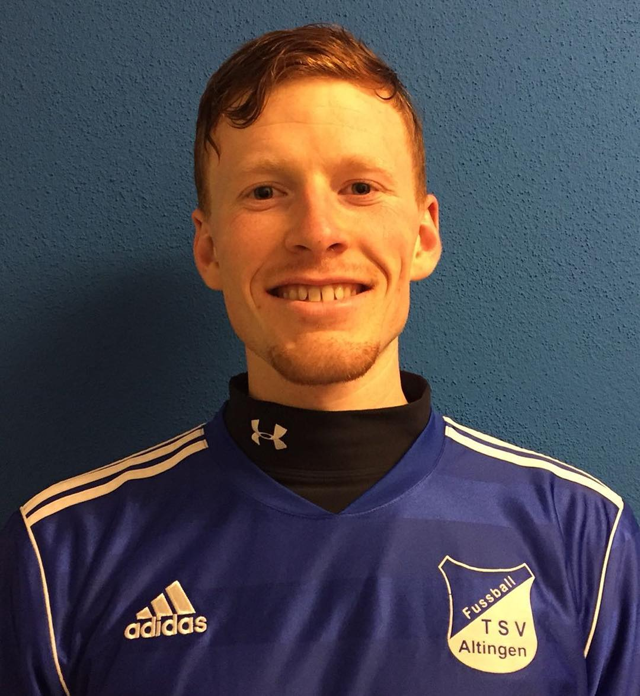

About Page
Portfolio
This site presents a brief glimpse into the life of Cullin and his prodigious works.
As a young nomaic, Cullin spent three years of his life abroad.
In 2013, he spent a year studying Spanish literature and interning as a novice bread-maker.
Two years later, Cullin set his sights on Mexico. There he spent the 2015-2016 academic year foraging for mushrooms and brewing a traditional fermented beverage, pulque.
For his last escapade -- at least to date -- Cullin migrated to the land of Germans. There he studied cargo bikes.
Soccer is a fundamental part of Cullin's life.
Cullin competed with the Fowlerville high school team. Here the group takes a photo during a summer pick-up match.
Team "Don Antonio", a mix of juveniles and old-timers.
After a training session with his German work colleague Nico Schmieder, Cullin soon found himself in the starting line-up for TSV Altingen, located in southern Germany.
